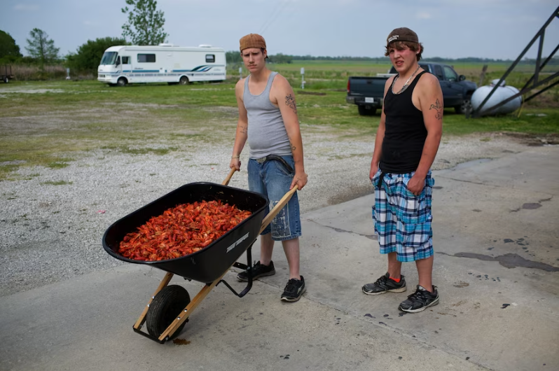
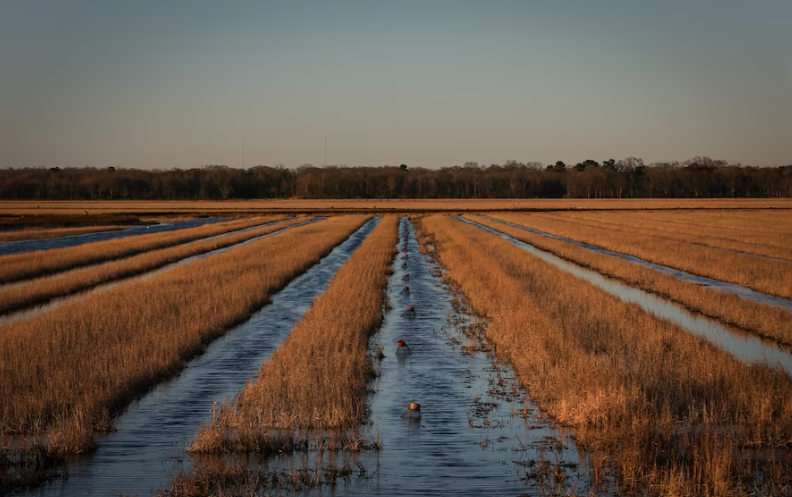

PHOTOGRAPH BY AARON HUEY, NAT GEO IMAGE COLLECTION
In 2020, Dane Powell opened Dane’s Crawfish and More, becoming a hit in Kirbyville, Texas, despite COVID-19 restrictions. The region, influenced by Cajun culture, cherishes crawfish, a cultural and culinary symbol. However, a dramatic 500% increase in prices this year shocks the industry due to drought and freezes affecting crawfish spawns. Zachary Hebert, a crawfish farmer, reflects the struggle, exacerbated by climate change. “We've only had 14 days of fishing under our belt since the first of the year, totaling about 2,500 pounds,” says Hebert. Louisiana faces increased extreme heat days, impacting food systems and causing economic hardships for crawfish-dependent communities.
A cultural icon
Crawfish have been a part of the Cajun diet for generations. But the delicacy remained confined to Louisiana until AJ Judice, Jr.—the “Crazy Frenchman”—began running crawfish races in 1963 to promote his Cajun food store in southeast Texas’ Port Arthur. Later named “state crawfish racing commissioner” by Texas Governor Preston Smith, Judice’s marketing charades eventually paid off by creating a regional market for what’s, today, a burgeoning industry.
But even as crawfish’s popularity as a food has spread beyond Louisiana, its farming industry and production has largely stayed home. Louisiana produces on average 90 percent of U.S. crawfish (roughly 170 million pounds), according to the Southern Regional Aquaculture Center. Since the 1960s, Louisiana State University Ag Center researchers noted that Louisiana crawfish farms’ acreage increased statewide from about 10,000 acres to more than 300,000 acres, said Mark Shirley, a Louisiana Sea Grant and LSU AgCenter extension agent—although about a quarter of those are unusable as saltwater levels rise. By comparison, Texas has only about 10,000 acres currently dedicated to farming crawfish, according to Texas A&M University’s AgriLife Extension Aquatic Diagnostics Lab; in Mississippi, about 300 acres, the Mississippi State University Extension Service estimates.
PHOTOGRAPH BY AARON HUEY, NAT GEO IMAGE COLLECTION
The crawfish economy spills into nearby states, too. It’s what Shirley described as the Gulf’s “Cajun belt of influence,”—or “as far as a Cajun with a truckload of crawfish can drive in about 8 hours,” he says, jokingly. In summer months, crawfish burrow two to four feet into the muddy soil. The creatures then seal off the burrows at the ground line, where crawfish will survive “so long as there is some water on the bottom of that burrow,” Shirley explains. The problem, however, is that most of the crawfish's freshwater habitat was too dry last year. “The number of young crawfish produced is just a fraction of what we normally have,” he says.
Drought and record heat imperil the mudbug
In September, 90 percent of Louisiana was in “extreme” drought, according to the National Oceanic and Atmospheric Administration. Where water usually stood across south Louisiana, cracks had begun to show in drying muddy floors. In Baton Rouge—about 55 miles north of the Acadiana region’s crawfish farmers—July 2023 was the city’s hottest month on record; the following month was recorded as the driest month that year for the entire state.
Recent cold weather spells exacerbated the strain on crawfish populations. Few crawfish eggs were able to hatch after mating last year. Then cold weather forced crawfish to go dormant, temporarily pausing the species’ feeding and molting process simultaneously, Shirley adds.
PHOTOGRAPH BY JON SHAPLEY, HOUSTON CHRONICLE/GETTY IMAGES
The LSU AgCenter estimated the state crawfish industry could lose $140 million this season. That estimate expands when accounting for out of state economies, like Texas’ crawfish market. Hebert adds, “It'll take four or five years before we get back where we're supposed to be.”
Peak season hits a crater
In its first several years, Powell, who purchases most of the establishment’s crawfish from Louisiana, said the restaurant typically sold 1,200 pounds of crawfish a week between February and April, and, again, from early summer to the Fourth of July. The boom times for restaurants like Powell’s and others align with the heights of the crawfish industry’s harvest schedule. But this year, the crawfish industry’s boom times have gone bust. “We're not making money, but we're not losing money at a pace that would kill us,” Hebert says of his family operation’s financial standing lately. “Can we sustain this for a year—for two years? No, probably not. We'll have to find something else to do. We'll have to go get jobs.” Luckily for Dane’s Crawfish and More, the menu is diverse enough to omit crawfish temporarily. Powell says he hopes to make up lost profit this summer, or during next year’s crawfish season. Still, “a year’s time, that’s a long way away,” Powell says. He paused and continued, “You never know what’s going to happen.”